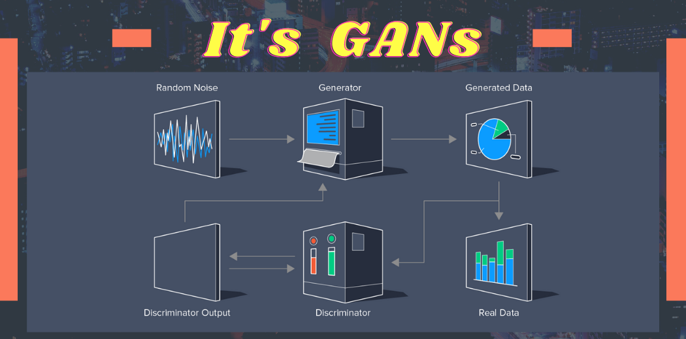

Prediction of next frame in a small video. Image 1
Prediction of next frame in a small video. Image 1
This article was published as a part of the Data Science Blogathon
There are many ways a machine can be taught to generate an output on unseen data. The technological advancement in different sectors has left everyone shocked. we are now at a point where deep learning and neural networks are so powerful that can generate a new human face from scratch that does not exist before but looks real based on some trained data. The technique is none other than GAN(Generative Adversarial Network) which is our topic of study. Let’s look at the table of content to understand the main topics we will cover.

Paint by holding down the mouse button and moving it.
Download the GANs Picture
More about anchor tag ? MDN Web Docs
Generative Adversarial Networks (GANs) were developed in 2014 by Ian Goodfellow and his teammates. GAN is basically an approach to generative modeling that generates a new set of data based on training data that look like training data. GANs have two main blocks(two neural networks) which compete with each other and are able to capture, copy, and analyze the variations in a dataset. The two models are usually called Generator and Discriminator which we will cover in Components on GANs. To understand the term GAN let’s break it into separate three parts
The generator network takes random input (typically noise) and generates samples, such as images, text, or audio, that resemble the training data it was trained on. The goal of the generator is to produce samples that are indistinguishable from real data.
The discriminator network, on the other hand, tries to distinguish between real and generated samples. It is trained with real samples from the training data and generated samples from the generator. The discriminator’s objective is to correctly classify real data as real and generated data as fake.
The training process involves an adversarial game between the generator and the discriminator. The generator aims to produce samples that fool the discriminator, while the discriminator tries to improve its ability to distinguish between real and generated data. This adversarial training pushes both networks to improve over time.
 Online Image Display
Online Image Display
As training progresses, the generator becomes more adept at producing realistic samples, while the discriminator becomes more skilled at differentiating between real and generated data. Ideally, this process converges to a point where the generator is capable of generating high-quality samples that are difficult for the discriminator to distinguish from real data.
GANs have demonstrated impressive results in various domains, such as image synthesis, text generation, and even video generation. They have been used for tasks like generating realistic images, creating deepfakes, enhancing low-resolution images, and more. GANs have greatly advanced the field of generative modeling and have opened up new possibilities for creative applications in artificial intelligence.
Machine learning algorithms and neural networks can easily be fooled to misclassify things by adding some amount of noise to data. After adding some amount of noise, the chances of misclassifying the images increase. Hence the small rise that, is it possible to implement something that neural networks can start visualizing new patterns like sample train data. Thus GANs were built that generate new fake results similar to the original.
Prediction of next frame in a small video. Image 1
Research on GANs is going at its peak, and In upcoming years we are going to see GANs producing high-quality video, audio, images. AS already Microsoft has collaborated with OpenAI to work on GPT and explore the power of GAN at the next level.
Two major components of GANs are Generator and Discriminator. The role of the generator is like a thief to generate the fake samples based on the original sample and make the discriminator fool to understand Fake as real. On the other hand, a Discriminator is like a Police whose role is to identify the abnormalities in the samples created by Generator and classify them as Fake or real. This competition between both the component goes on until the level of perfection is achieved where Generator wins making a Discriminator fool on fake data.

Now let us understand, what is this two-component to understand the training process of GAN intuitively.

Here the generative model captures the distribution of data and is trained in such a manner to generate the new sample that tries to maximize the probability of the discriminator to make a mistake(maximize discriminator loss). The discriminator on other hand is based on a model that estimates the probability that the sample it receives is from training data not from the generator and tries to classify it accurately and minimize the GAN accuracy. Hence the GAN network is formulated as a minimax game where the Discriminator is trying to minimize its reward V(D, G) and the generator is trying to maximize the Discriminator loss.